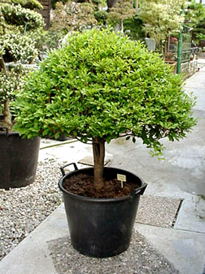

Стиль бонсай возник в Китае и относится к эпохе династии Тан (VIII — X вв.). Среди настенной живописи найдено изображение пеньцзай — растение, взятое из природы и пересаженное в горшок. Слово «бонсай» происходит от китайского слова «пэньцай» (китайское прочтение тех же иероглифов) и означает «выращенное в подносе». Одна из легенд гласит, что некий император повелел создать миниатюрную империю со всеми деревьями, городами, реками и горами. Для этой цели и были созданы миниатюрные деревья. Считается, что в Японию искусство принесено в VI веке буддистскими монахами. Выращиваемые растения использовались для украшения ниши дома, максимальная высота деревьев поэтому составляла около половины метра. Спустя некоторое время, в связи с развитием техники любования бонсай, его начинают использовать при проведении чайной церемонии. В это время искусство называется хати-но-ки — «дерево в горшке». С XVIII века японцы окончательно превращают эту технику в искусство, возникает множество стилей. В эру Токугава парковый дизайн получил новый толчок: выращивание азалий и клёнов стало времяпрепровождением богатых людей. Развивали это искусство и буддисты, которые считали, что человек, выращивающий бонсай, приравнивается к богу, потому что в их видении мир выглядит, как сад Будды, где он садовник. Сейчас для бонсай используются обычные деревья, маленькими они становятся благодаря постоянным подрезаниям и различным другим методам. При этом соотношения размеров корневой системы, ограниченной объёмом плошки, и наземной части бонсай соответствует пропорциям взрослого дерева в природе. Медную проволоку стали использовать только после Второй мировой войны, до этого использовались струны. Первая выставка бонсай состоялась в Токио в 1914 году. К XXI веку о бонсай уже написано более 1200 книг на 26 языках мира.